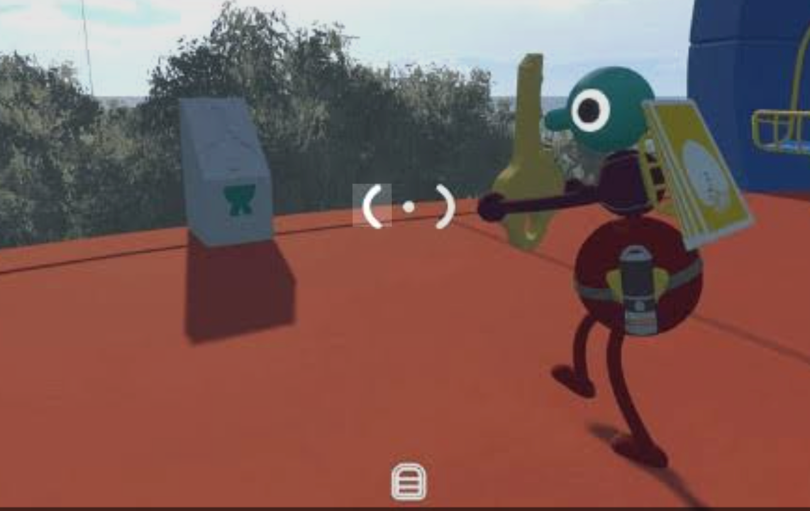
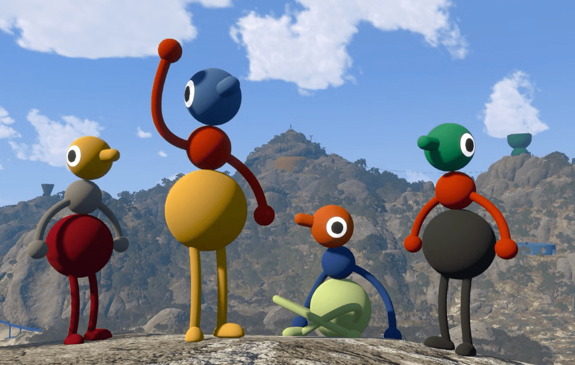

How backpacks and waist packs work
Both bag types add a place to carry an item. With a backpack, a waist pack and one item held in hand, a player can carry up to three items. In a smaller group, collecting both bag types for each player can make longer exploration routes much easier.
These bags are usually inside blue circular, multi-level buildings with a short blue ramp leading in. Visit the building even if you already found a bag nearby: a location can contain either a backpack or a triangular waist pack.
How to equip a bag

- Ask another player to pick up the backpack or waist pack.
- Stand close to the player who should wear it. A white circle around a character holding an item signals that another player can interact.
- The other player equips the bag onto that character.
- Repeat for the second bag if you want that player to hold three items in total.
Because another player equips the bag, this is a useful early reminder that even inventory management is designed as a co-op action.
Backpack coordinates
| Colour | Coordinates | Landmark |
|---|---|---|
| Yellow backpack | 1380, 3750 | Southwest of the Red Tower |
| Green backpack | 1660, 3720 | Central Mountain Range slopes, north of the light-green radio music zone |
| Light pink backpack | 1775, 4275 | Blue building west of the southern cable car station |
| Light blue backpack | 1540, 3500 | Northeast of the Map Room |
| Light red backpack | 3310, 2000 | East of the Yellow Tower, near the beach and green barrier |
| Red backpack | 4340, 2025 | Southeast corner; ride the cable car down, then walk southeast |
Waist pack coordinates
| Colour | Coordinates | Landmark |
|---|---|---|
| Yellow waist pack | 1860, 3750 | Hillside northwest of the Green Tower |
| Green waist pack | 1330, 3440 | Northwest of the Map Room / southwest of the Yellow Tower |
| Red waist pack | 3220, 1720 | Northeast of the Yellow Tower |
| Blue waist pack | 4340, 2025 | Southeast corner; same blue building as the red backpack |
A practical collection route

Do not send the whole group across the island for every bag at once. Start with locations close to your current route, especially the Map Room, Red Tower and Yellow Tower areas. When transport is available, use the southeastern double-bag building as a planned stop: it is the only known blue building with two bags.
Open the map and zoom into the North/West, North/East and South areas when checking coordinates. Marker screenshots can overlap between map areas, so use the landmark description as well as the number pair.
Backpacks FAQ
How many bags are there?
This guide lists 10 bags in total across 9 blue buildings: six backpacks and four waist packs.
Can one player wear both bag types?
Yes. With both equipped, that player can carry an item in each bag plus one in their hands.
Why can’t I equip a bag myself?
Another character needs to pick up and equip the bag onto you. Coordinate with a teammate while standing close together.
Related guides
Map and landmark guide · Map Room guide · Items and tools · Radio guide · Beginner FAQ
Coordinates and bag details are community guide information supplied by the site owner, not an official location list. Recheck after game updates and use landmarks if a coordinate looks slightly different in-game. Last reviewed September 1, 2026.